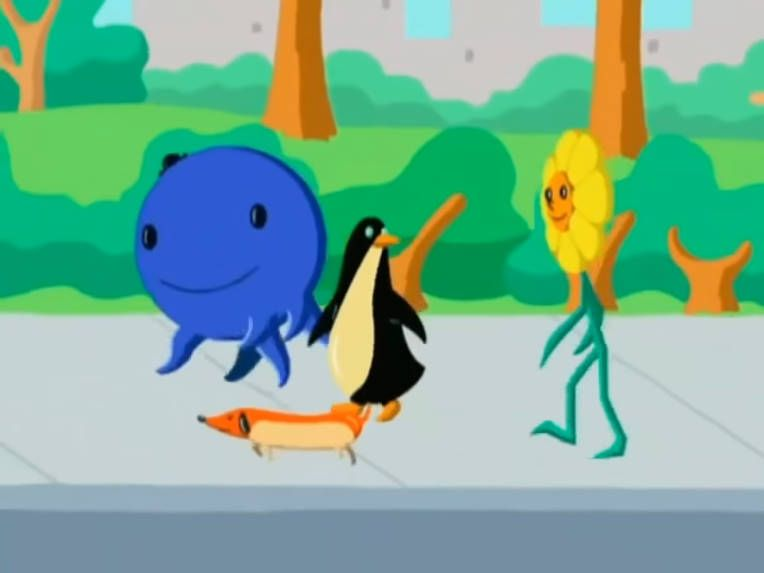

About Oswald
Oswald is a large, blue octopus who takes residence in an apartment complex located in Big City. He lives there along with many other animals, such as Henry the penguin and a turtle named Buster. Oswald will often play the piano while singing to his pet dog Weenie. Oswald is known to say "Oh, my gosh!" on many occasions. He wears a life preserver when he is around water and loves Swizzleberry Swirl ice cream.
Oswald and his friends
Oswald's characteristics
- He is a circular shape
- He is blue in colour
- He almost always sports a black hat.
Oswald's Friends
Oswald has some awesome friends. They are Henry, Daisy, Weenie.Click on the links below to read more about them: